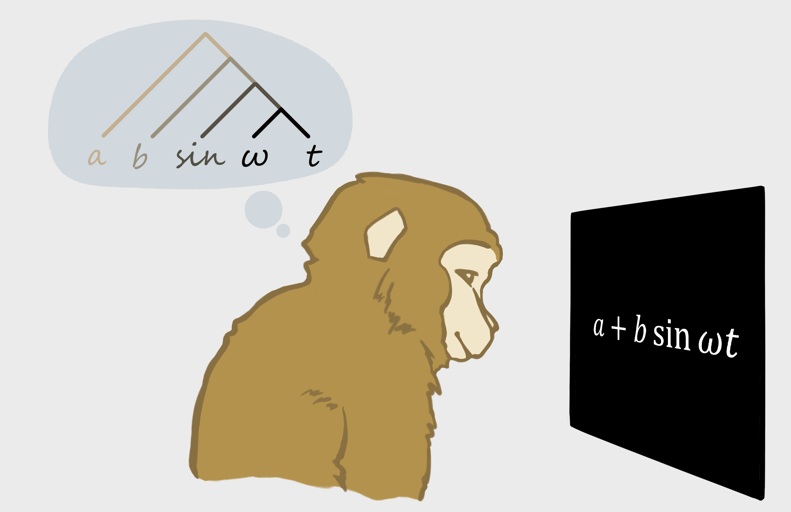

The neural basis of compositionality.

Yang Xie
I am a neuroscientist studying the neural basis of higher cognitive functions in primates. My research asks how neural populations represent information and combine it into flexible thoughts and behavior.
I received my Ph.D. at the Institute of Neuroscience, Chinese Academy of Sciences, working with Tianming Yang on value-based decision-making. I then joined Liping Wang’s lab as a postdoctoral fellow to investigate sequence working memory.
Following my work as a principal investigator at Lingang Laboratory, I joined Shanghai Jiao Tong University in 2025 to establish Xie Lab.
Global Institute of Future TechnologyPostdoctoral and student opportunities